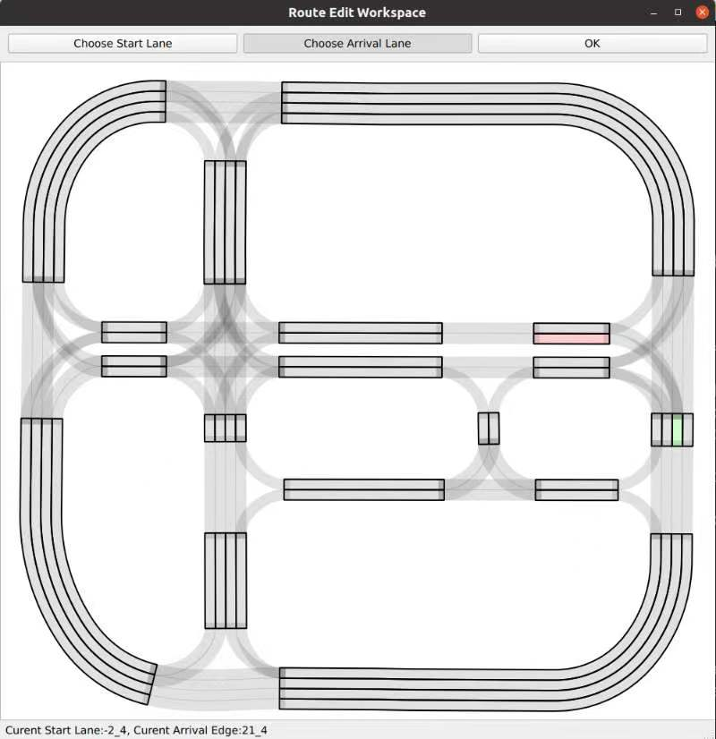

问题1：自定义QGraphicsItem的选中效果
当把某个QGraphicsItem设置为ItemIsSelectable时，鼠标选中会有效果：item显示一个矩形的虚线边框
由于我的item本身不是矩形，且虚线不够明显，我希望修改成点击后改变填充的颜色。
解决方法：
重新定义一个自己的QGraphicsItem类，继承自原来的item类，并重写paint()函数。在函数中加入判断是否点击，并改变笔刷颜色。
先看一下虚线的由来(C++版本的):
参考 https://developer.aliyun.com/article/119812
1
2
3
4
5
6
7
8
9
10
11
12
| void QGraphicsPathItem::paint(QPainter *painter, const QStyleOptionGraphicsItem *option,
QWidget *widget)
{
Q_D(QGraphicsPathItem);
Q_UNUSED(widget);
painter->setPen(d->pen);
painter->setBrush(d->brush);
painter->drawPath(d->path);
if (option->state & QStyle::State_Selected)
qt_graphicsItem_highlightSelected(this, painter, option);
}
|
可以看到在paint函数中调用了qt_graphicsItem_highlightSelected函数来实现点击后显示效果的功能。那么我们重写的paint函数只要完成（1）把内容画出来，（2）判断selected并修改painter样式
最终代码如下：
1
2
3
4
5
6
7
8
9
10
11
12
13
14
15
16
17
18
19
20
21
22
23
24
25
26
27
28
29
30
31
32
33
34
35
36
37
38
39
40
41
42
43
44
45
46
47
48
49
50
| import sys
from PySide6 import QtWidgets
from PySide6.QtGui import *
from PySide6.QtWidgets import*
from PySide6.QtCore import Qt, QPointF, QPoint
class myQGraphicsPolygonItem(QtWidgets.QGraphicsPolygonItem):
def __init__(self, polygon):
super().__init__(polygon)
def paint(self, painter: QPainter, option: QStyleOptionGraphicsItem, widget):
painter.setPen(self.pen())
painter.setBrush(self.brush())
selected = option.state & QStyle.StateFlag.State_Selected
if selected:
brush = QBrush(QColor(0, 0, 0))
painter.setBrush(brush)
painter.drawPolygon(self.polygon())
class Demo(QGraphicsView):
def __init__(self):
super(Demo, self).__init__()
self.resize(600, 600)
self.scene1 = QGraphicsScene()
self.scene1.setSceneRect(0, 0, 300, 300)
points = [(200,100), (180, 150), (200, 200), (250, 200), (270, 150), (250, 100)]
points = [QPointF(x,y) for x,y in points]
polygon = QPolygonF(points)
self.polygon1 = myQGraphicsPolygonItem(polygon)
pen = QPen(QColor(0,255,0))
brush = QBrush(QColor(255,0,0))
self.polygon1.setPen(pen)
self.polygon1.setBrush(brush)
self.scene1.addItem(self.polygon1)
self.polygon1.setFlags(QGraphicsItem.ItemIsSelectable | QGraphicsItem.ItemIsMovable)
self.setScene(self.scene1)
if __name__ == '__main__':
app = QApplication(sys.argv)
demo = Demo()
demo.show()
sys.exit(app.exec())
|
可以实现点击后改变颜色，点击其他位置恢复颜色。
点击QGraphicsItem后触发MainWindow窗口的函数
在应用中，我希望点击一个QGraphicsItem后（如下面的一条车道），在MainWindow的statusbar部件中显示选择的车道的Id.

我可以设置全局变量choosedLane，在每选择一个item时修改该全局变量的值。但我希望在修改后MainWindow的Statusbar更新信息。即每点击一次车道，向主窗口发送一次信号。
解决方案：
参考 https://cloud.tencent.com/developer/ask/sof/114657898
可以自定义一个QGraphicsScene类，加入一个Signal变量。并修改需要点击的QGraphicsItem的函数mousePressEvent()，使其所在scene的Signal变量发射信号，再在主窗口将该变量与需要发生事件函数连接。
部分代码如下：
1
2
3
4
5
6
7
8
9
10
11
12
13
14
15
16
17
18
19
20
21
22
| class myQGraphicsPolygonItem(QGraphicsPolygonItem):
def __init__(self, polygon):
super().__init__(polygon)
def paint(self, painter: QPainter, option: QStyleOptionGraphicsItem, widget):
def mousePressEvent(self, event):
self.scene().itemClicked.emit(self)
class myQGraphicsScene(QGraphicsScene):
itemClicked = Signal(object)
class GUI(QGraphicsView):
def __init__(self):
self.scene_map = myQGraphicsScene()
self.setScene(self.scene_map)
self.scene_map.itemClicked.connect(self.showMessage)
def showMessage(self):
|
GUI运行耗时程序时用多线程防止窗口卡住
在项目中，我有一个交通流仿真程序，按帧得到各个时刻要显示的polyline，polygon等。我希望随着仿真程序的运行，图形化界面能实时刷新。
但如果仿真和可视化在单线程中顺序进行，在运行仿真函数时，虽然实时调用了绘画的函数，界面却不会马上更新，只有当仿真程序运行完成后，才会一次性显示当前的结果。
参考： https://realpython.com/python-pyqt-qthread/
我使用的解决方案是在主线程中跑GUI基于事件循环的显示，另外开一个线程跑仿真，然后通过signal和slot机制来在两个线程之间通讯（仿真线程将要画的几何信息用signal发送给主线程）。
这里还遇到一个小问题：每一帧仿真时，我会清除界面原来的内容，再重新加上新的几何图形（向QGraphicsScene中addItem）。由于widget在每次清除和加入时都会自动刷新，导致程序跑起来界面一直闪烁。
解决方法：运用setUpdateEnabled()，在每一帧开始改变前为主窗口设置setUpdateEnabled(False)，这样虽然子线程向主线程发送了clear,additem等signal，窗口不会马上更新。等到一帧全部画完后，再设置setUpdateEnabled(True)，此时窗口会一下把之前所有的改变更新完成，就不会出现画面卡顿闪烁的情况了。